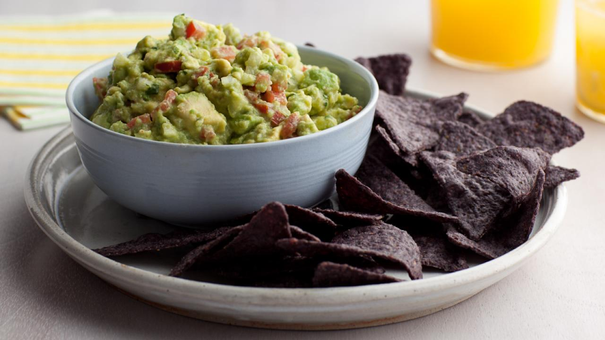

Brian's Famous Guacamole

The best recipe for guacamole with a little kick!
If you are looking for a little spice in your guacamole, this is the recipe for you. You can leave the seeds in the jalapenos if you want to kick up the spice a notch.
Ingredients
- 3 Haas avocados, halved, seeded, and peeled
- 1 lime, juiced
- 1/2 teaspoon kosher salt
- 1/2 teaspoon ground cumin
- 1/2 teaspoon cayenne
- 1/2 medium onion, diced
- 1/2 jalapeno pepper, seeded and minced
- 1 tablespoon chopped cilantro
- 1 clove garlic, minced
- 2 Roma tomatoes, seeded and diced (optional)
Instructions
- In a large bowl, place the scooped avocado pulp and lime juice, toss to coat. Drain, and reserve the lime juice.
- Using a potato masher, add the salt, cumin, and cayenne and mash.
- Fold in the onions, cilantro, garlic, and tomatoes.
- Add 1 tablespoon of the reserved lime juice.
- Let sit at room temperature for 1 hour and then serve.